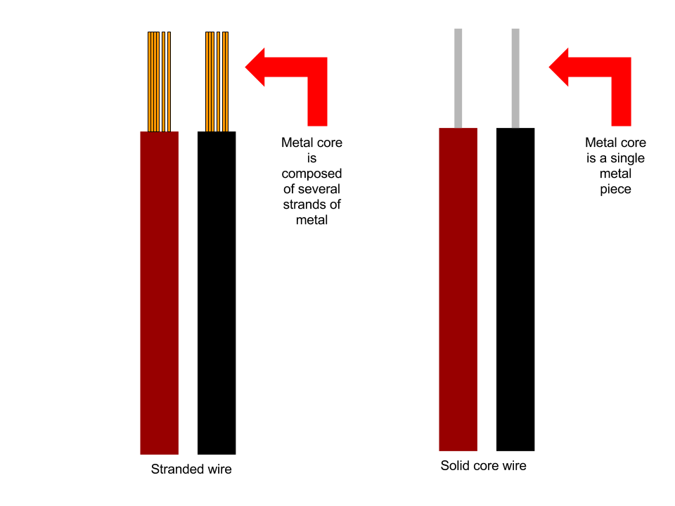
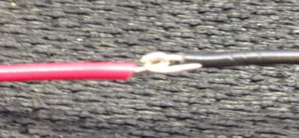
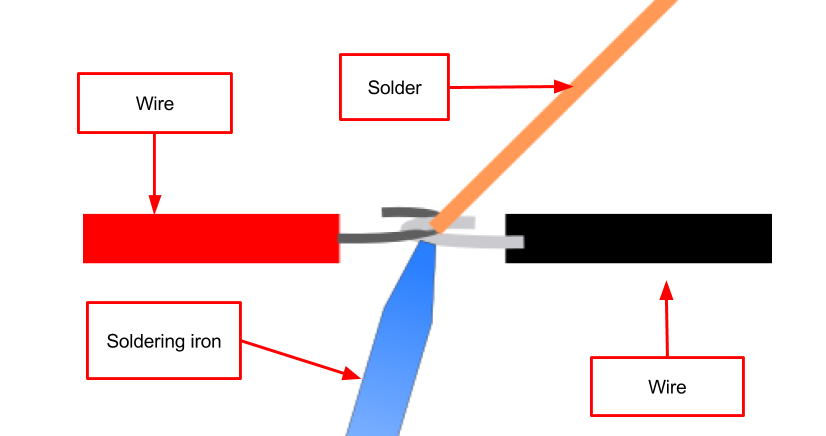
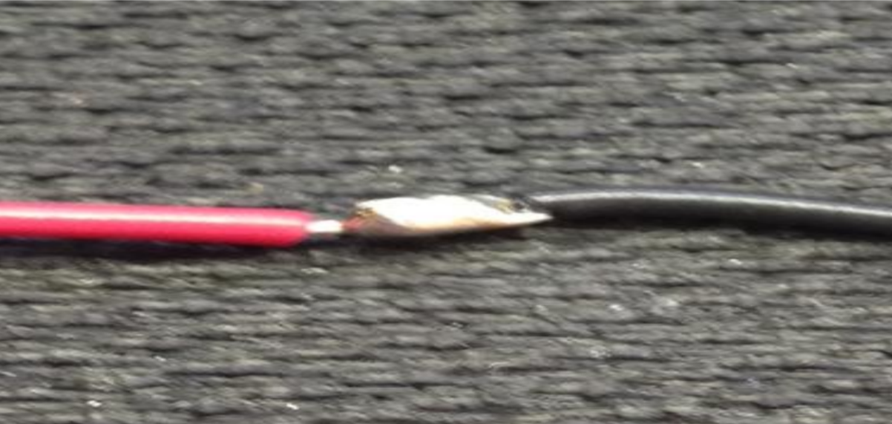
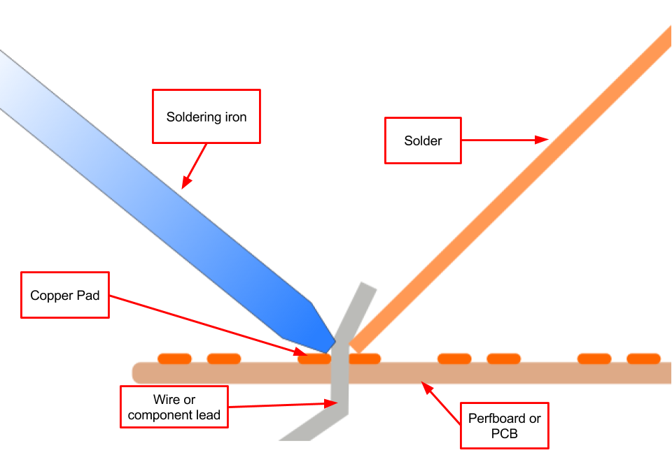

Soldering
Soldering is a process often used when working with electronics. It consists of melting one metal to connect two or more metal pieces.
This connection not only creates an electrical connection, but it also secures a component in place.
We will be going over two different
situations where soldering is used. The first being when soldering two different wires together
and the second is when soldering a component to a perfboard or a PCB. A perfboard is a rigid board which has a grid of holes drilled into it. Each hole is surrounded by a copper pad onto which you can adhere solder. A PCB is a printed circuit board. They are similar to perfboards except that the components are connected using a conductive material built into the board.
The soldering process
What is needed:
- Soldering iron
- Solder (preferably lead free)
- Components you want to solder
- Vent fan
- Solder wick
- De-soldering tool
- Soldering mat
Optional items
Soldering two wires together
Soldering two wires is the best way to practice soldering at the very beginning. There are two types of wire, either stranded or solid core. Both have a metal core wrapped in a plastic covering. To see the metal, you need to expose the core by removing the plastic. There are special tools to do this called “wire strippers”. However, it is possible to do the same thing with scissors. A video on how to strip the wire is available here.
Procedure
- Grab a few wires, strip 1 cm off each end and bend each end in a U shape.
- Crimp the two wires together with a pair of pliers. 
- Hold the soldering iron like a pen. Heat the two wires for 1-2 seconds and then flow solder on the connection. The goal is to heat the connection not the solder. Once you see the solder flow evenly throughout the connection, remove the solder and soldering iron. 
- Allow the connection to cool, this usually takes 20-30 seconds. During this time, avoid moving the wires 
Soldering to a board
- Place the lead (metal stick coming from component) or wire through the hole in the perfboard or PCB.
- Holding the soldering iron like a pen, heat the copper pad and lead with soldering iron until the solder begins to flow and forms a strong connection. Remove solder, and then the soldering iro. This process should take only a few seconds. 
- Allow for the connection to cool